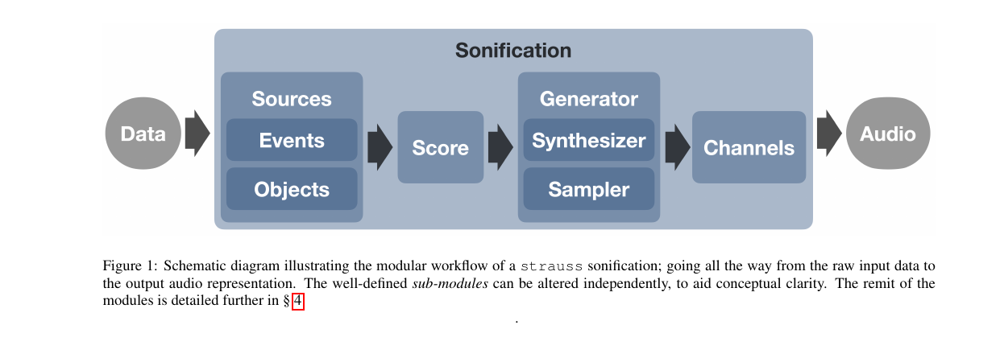
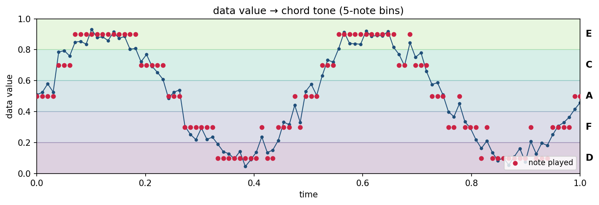
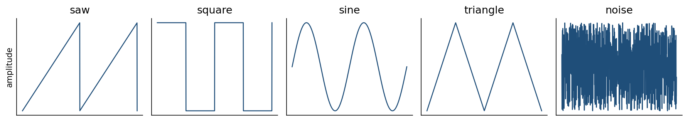
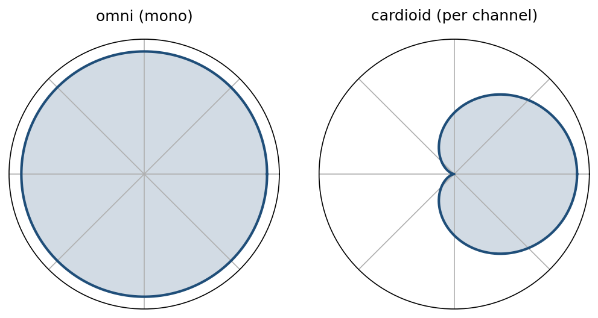
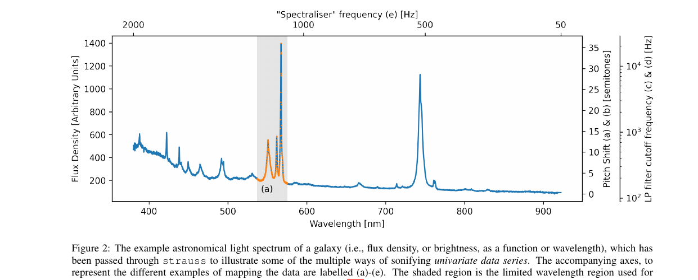
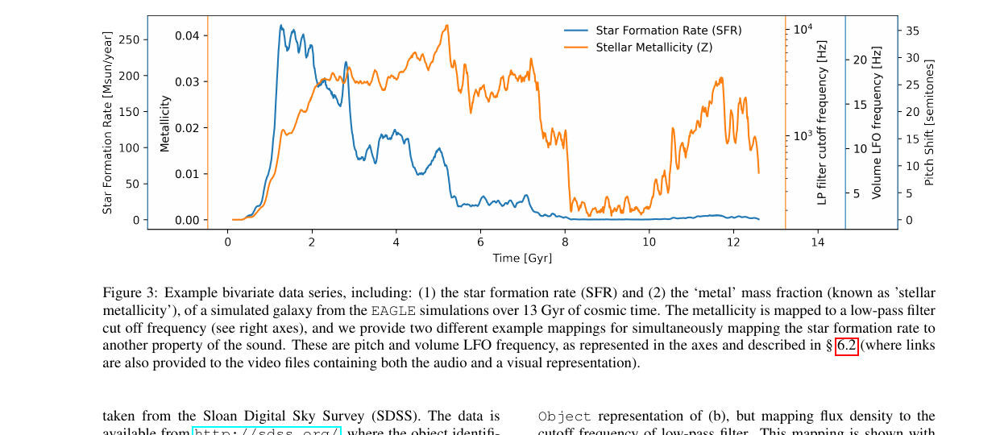
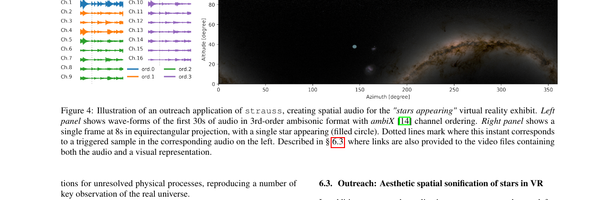

flowchart LR
D[(Data)] --> S[Sources]
S --> SC[Score]
SC --> G[Generator]
G --> CH[Channels]
CH --> A[[Audio]]
A Python package for turning data into sound
2026-04-24
strauss?strauss pipelineReference: Trayford & Harrison, ICAD 2023 (arXiv:2311.16847)
A plot encodes data in:
A sonification encodes data in:
The mapping choices matter as much as the data.
strauss?Two extremes, nothing in the middle:
Specialized tools
astronify, SonoUno, HighchartsAudio workstations / synthesis envs
strauss is designed to sit between them.
import, not a new IDEstrauss Workflow
Data goes in, audio comes out. Each blue box is an independent Python class.
flowchart LR
D[(Data)] --> S[Sources]
S --> SC[Score]
SC --> G[Generator]
G --> CH[Channels]
CH --> A[[Audio]]
| Stage | Role |
|---|---|
| Sources | Who plays (mapping data → sound parameters) |
| Score | Key, chord, duration |
| Generator | Instrument (sampler or synthesizer) |
| Channels | Spatial mix (mono, stereo, ambisonic, …) |
| Sonification | Top-level class; calls render() |
A Source is one virtual performer in a 3D scene.
Two subclasses:
Events — single occurrences (a supernova, a lightning strike)Objects — persistent, evolving sources (a galaxy across 13 Gyr)Parameters you map to data:
pitch, volume, cutoffazimuth, polar (3D direction)Full list in Table 1 of the paper.
Why bother? Raw data → continuous pitch sounds like a theremin. Quantizing onto a chord makes it listenable.

Data value at each time step (blue) is snapped to the nearest chord tone (red). Here, 5 notes → 5 bins.
Sampler
Synthesizer
default, winter, magma)Spectraliser

The five oscillator shapes the synthesizer can combine.
Synthesizer presets (.yml)
default — three detuned sawspitch_mapper — single oscillator, clean pitchwindy — filtered noise, texturalspectraliser — IFFT from a spectrumSampler presets + samples
default, staccato, sustainUser presets are just YAML — shareable like Ableton racks.
ambiX, arbitrary order)A source at altitude 45°, azimuth 180° lands there in the 3D mix. This is what makes VR planetarium output possible.

Virtual microphone sensitivity vs. direction. Cardioid pattern picks up sound from one side — rotate one per channel and you have spatial audio.
from strauss.sonification import Sonification
from strauss.sources import Objects
from strauss.score import Score
from strauss.generator import Synthesizer
score = Score([["A2"]], length=15.)
generator = Synthesizer(); generator.load_preset("pitch_mapper")
sources = Objects(data.keys())
sources.fromdict(data); sources.apply_mapping_functions()
soni = Sonification(score, sources, generator, "stereo")
soni.render()
soni.save("galaxy.wav")Top-level class; render() builds the audio, save() writes a .wav.

Blue curve: a galaxy’s brightness vs. wavelength. Five mappings, same data:
| Sound source | What brightness controls | |
|---|---|---|
| (a) | discrete mallet hits (one per point) | pitch of each hit |
| (b) | one steady tone | pitch of the tone |
| (c) | held chord of saw waves | low-pass filter cutoff (tone color) |
| (d) | white noise | low-pass filter cutoff (tone color) |
| (e) | the spectrum is the waveform (audification) | — |
(a) mallet hits (b) pitched tone
(c) filtered chord (d) filtered noise
(e) audification

13 Gyr of galaxy history → ~30 s audio. Two mappings at once:
Listen (a) — SFR → pitch
Listen (b) — SFR → pulse rate

Listen (first-person view, stereo mix)
Full 3D version uses 16-channel ambisonic audio — stars heard where you see them in a planetarium dome.
Example notebooks
SonifyingData1D — walkthrough on mock dataSpectralData — planetary-nebula spectrum as soundStarsAppearing — planetarium VR pieceLightCurveSoundfonts — loading .sf2 soundfonts as instrumentsPlanetaryOrbits — one note per planetDaySequence — sunrise-to-sunset soundscapeEarthSystem — Earth’s rotation, land vs. water drives a filterAudioCaption — TTS captions in front of a sonificationstrauss fills a gap between one-trick sonifiers and full DAWs